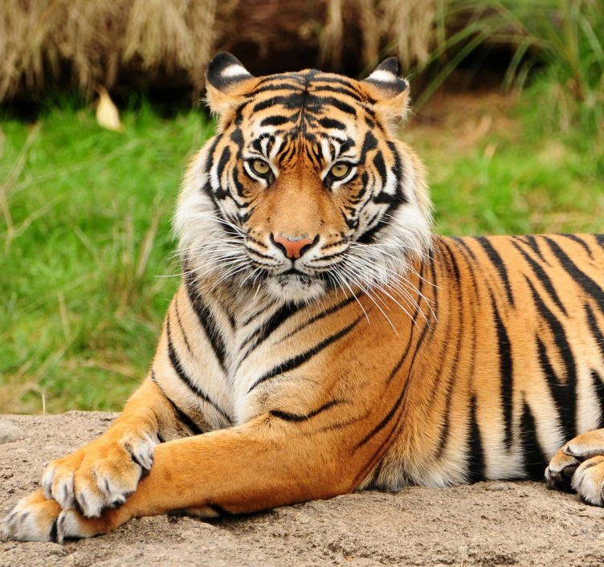
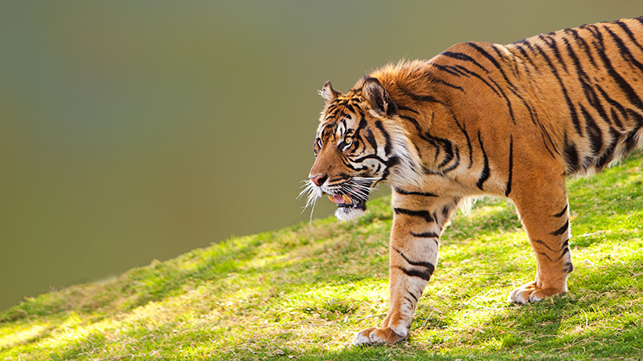

Introducción a los Tigres
Los tigres son los felinos más grandes del mundo y uno de los depredadores más majestuosos. Estos animales son solitarios, territoriales y excelentes cazadores. Existen seis subespecies de tigres distribuidas por Asia, cada una con características únicas y adaptaciones especiales para su entorno natural. En esta página descubrirás información detallada sobre cada tipo de tigre, incluyendo su hábitat, dieta, características físicas y estado de conservación actual.

Tigre de Bengala
Pelaje naranja brillante con rayas negras, vientre blanco, gran fuerza y resistencia.
Venados, jabalíes, búfalos acuáticos. Consume 15-25 kg diarios.
- Excelente nadador.
- Territorios de 50-150 km².
- Éxito de caza ~5%.

Tigre de Siberia (Amur)
Pelaje espeso, adaptado al frío extremo, muy grande y musculoso.
Ciervos sika, jabalíes, alces. Consume 20-30 kg diarios.
- Felino más pesado del mundo.
- Puede soportar -45°C.
- Recuperación de solo 40 a 600 ejemplares.

Tigre de Indochina
Más pequeño, rayas rectas, color naranja oscuro y cuerpo ágil.
Ciervos, jabalíes muntjac. Consume 15-20 kg diarios.
- Hábitat en bosques secos.
- Muy esquivo y nocturno.
- Extremadamente amenazado.

Tigre de Malasia
Tamaño pequeño, extremadamente ágil, ideal para la selva densa.
Jabalíes, ciervos pequeños. Consume 10-15 kg diarios.
- Distribución más estrecha.
- Muy difícil de ver.
- Sobrevive en bosques perturbados.

Tigre de Sumatra
El más pequeño, rayas densas y melena en cuello; adaptado a isla tropical.
Jabalíes, ciervos, primates. Consume 15-20 kg diarios.
- Único tigre de isla.
- Rayas más densas.
- En peligro crítico.

Tigre del Caspio ⚰️
Fué cazado hasta la extinción. Era similar al tigre de Amur y vivía en humedales.
Su extinción muestra la urgencia de proteger especies y hábitats antes de perderlos.
- Extinto por caza y pérdida de hábitat.
- Era un depredador de humedales ribereños.
- Su desaparición es una advertencia para la conservación.
📊 Comparativa Detallada de Tipos de Tigres
| Tipo de Tigre | Peso Promedio | Largo Corporal | Hábitat Principal | Estado Conservación |
|---|---|---|---|---|
| Tigre de Bengala | 220 kg (machos) | 2.7 - 3.1 m | Selva tropical, manglares | En Peligro |
| Tigre de Siberia | 250-300 kg (machos) | 2.7 - 3.3 m | Bosques templados fríos | En Peligro Crítico |
| Tigre de Indochina | 150-180 kg (machos) | 2.4 - 2.8 m | Bosques deciduos secos | En Peligro Crítico |
| Tigre de Malasia | 100-150 kg (machos) | 2.4 - 2.6 m | Selva tropical densa | En Peligro Crítico |
| Tigre de Sumatra | 100-140 kg (machos) | 2.4 - 2.5 m | Bosques tropicales de isla | En Peligro Crítico |
🍖 Dieta Detallada de los Tigres por Tipo
| Tipo de Tigre | Presas Principales | Consumo Diario | Técnica de Caza |
|---|---|---|---|
| Tigre de Bengala | Venados sambar, chital, jabalíes, búfalos | 15-25 kg/día | Acecho y emboscada desde agua |
| Tigre de Siberia | Ciervos sika, jabalíes, alces, corzos | 20-30 kg/día | Persecución en nieve profunda |
| Tigre de Indochina | Ciervos, jabalíes muntjac, gaurales | 15-20 kg/día | Acecho silencioso nocturno |
| Tigre de Malasia | Jabalíes, ciervos pequeños, puercoespines | 10-15 kg/día | Caza extremadamente furtiva |
| Tigre de Sumatra | Jabalíes, ciervos, primates, aves grandes | 15-20 kg/día | Acecho en selva densa tropical |
🐯 Datos Fascinantes Sobre los Tigres
- Rayas Únicas: Cada tigre tiene un patrón de rayas único, como las huellas dactilares en los humanos. ¡Ningún tigre es idéntico a otro!
- Saltos Extraordinarios: Los tigres pueden saltar hasta 9 metros de distancia horizontalmente en un solo salto explosivo.
- Visión Nocturna Excepcional: Su visión nocturna es 6 veces mejor que la de los humanos, perfecta para ser cazadores nocturnos eficientes.
- Rugido Poderoso: El rugido de un tigre puede escucharse a 3 kilómetros de distancia en la selva. ¡Es uno de los sonidos más poderosos del reino animal!
- Nados Expertos: A diferencia de otros gatos grandes, los tigres son excelentes nadadores y aman el agua, pueden nadar 30 km sin parar.
- Cazadores Solitarios: Son cazadores independientes, excepto durante el apareamiento y la crianza de cachorros.
- Territorio Extenso: Un tigre macho puede controlar un territorio de 50-200 km² según la disponibilidad de presas.
- Reproducción: Tienen 2-4 crías por gestación, con período de embarazo de 3-4 meses. Las madres son muy protectoras.
- Esperanza de Vida: En la naturaleza viven 8-15 años; en cautiverio bajo cuidado profesional hasta 25 años.
- Ancianos de la Selva: Son los felinos con mayor esperanza de vida entre los grandes depredadores.
- Lenguaje Corporal Complejo: Los tigres usan vocalizaciones, marcaje con orina, gestos y expresiones faciales para comunicarse.
- Protección Legal CITES: Todos los tigres están protegidos por la CITES desde 1987 (Convención sobre Comercio Internacional de Especies Amenazadas).
- Sin Depredadores Naturales: Los adultos no tienen depredadores naturales. Solo los humanos representan amenaza real.
- Flexibilidad en Dieta: Cuando tienen hambre extrema, pueden cazar desde insectos grandes hasta elefantes jóvenes.
- Éxito en Caza Limitado: Solo tienen éxito en el 5% de sus intentos de caza, requiriendo múltiples intentos diarios.
⚠️ Estado de Conservación - Situación Crítica
- Pérdida de Hábitat: La deforestación y urbanización son las principales amenazas. Pierden miles de hectáreas anuales.
- Caza Ilegal Descontrolada: Son cazados por sus pieles valiosas y partes del cuerpo usadas en medicina tradicional.
- Número Crítico: Existen solo 3,000-4,000 tigres en la naturaleza actualmente. Hace un siglo había 100,000.
- Iniciativas de Conservación: El Proyecto Tigre de la India y programas internacionales trabajan intensamente para su protección.
- Meta Ambiciosa 2050: Se espera duplicar la población de tigres para 2050 a través de esfuerzos coordinados de conservación.
- Reservas Protegidas Globales: Se han establecido más de 100 reservas y corredores biológicos para conectar poblaciones fragmentadas.